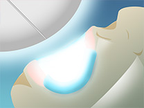

- ホーム
- ホワイトニング・口元エステ・ケア
Whitening歯を薬剤で白くします～ホワイトニング～
歯の黄ばみが気になりませんか？
「もっと白かったら思いっきり笑えるのに」……と思っていませんか？気になる方は渋谷駅すぐの歯医者「渋谷ルーブル歯科・矯正歯科」にお気軽にご相談ください。歯を削らずに薬剤で白くするホワイトニングに対応します。ホワイトニングにはいくつかの種類があり、効果には個人差がありますので、まずはご相談ください。
歯の着色はどうして起こるのでしょうか？
1 先天的理由
妊婦さんが特定の抗生物質を服用すると、お腹の赤ちゃんの歯が全体的に着色して生えてくることがあります。また高濃度のフッ素を長期間服用したときにも歯に着色が起こります。
2 歯の神経の治療による着色
重度の虫歯の治療で歯の神経を抜くと、その歯がだんだん黒ずんでいきます。また治療で歯に金属の土台を装着すると、経年により金属成分が溶け出して歯が黒ずむことがあります。
3 日常生活での着色
喫煙は歯の色素沈着を引き起こします。また色の濃い飲食物も歯への着色の原因です。たとえば、赤ワイン、コーヒー、紅茶、ウーロン茶、カレーなどが歯を着色しやすい食品です。
4 加齢による着色
歯の表面のエナメル質は加齢によりだんだんと薄くなります。またエナメル質の内側の象牙質は、加齢とともに黄色味を増す傾向があるので、歯が黄色く見えるようになるのです。
歯の着色のおもな原因はこの4つです。ホワイトニングによって歯の白さを得られるのは、日常生活による着色や加齢による着色です。原因が先天的な場合と治療による場合はセラミック素材による「審美治療」をおすすめします。
ホワイトニングのメリット・デメリット
歯を白くする方法は、ホワイトニングと人工物の装着の2種類です。セラミック素材でつくる人工物は自然な色や形につくれますが、装着するために歯を削らなければなりません。とくに健康な歯を削るのには抵抗がある方も少なくないでしょう。
しかしホワイトニングは、過酸化水素という薬剤を使って白くするので、歯を削る必要がありません。また負担費用が比較的少ないため、何度でも施術できるのもメリットです。
メリット
- 健康な天然歯を削らずに白くできる
- 負担が少ないので何度でも施術可能
- 比較的かんたんに歯を白くできる
- ほとんど痛みがない
- 値段がリーズナブル
デメリット
- 色が「あと戻り」するので、メンテナンスが必要
- 虫歯や歯周病がある場合には治療が優先
- 人工歯は白くならない
注意点
- ホワイトニングの効果には個人差があります
- 18歳未満の方、妊娠中の方、授乳中の方は受けられません
- ホワイトニング後48時間は、濃い色素の飲食物は避けてください
- ホワイトニング剤は飲み込まないように注意しましょう
- ご自宅でのホワイトニングの際には、医師の指示に従い施術や薬剤・マウスピースの管理をおこなってください
- ホワイトニング中に痛みなどがある場合には中止して、症状が治まらないときには当院までご連絡ください
ホワイトニングを控えたほうがいい方
- 知覚過敏がある方
- 呼吸疾患やゴムアレルギーのある方
- 無カタラーゼ症の方
- 妊娠中、授乳中の方
- 虫歯や亀裂がある歯
- 変色が著しい歯 など
渋谷ルーブル歯科・矯正歯科がおこなうホワイトニングの種類
大きく分けて2種類です。それは歯科医院で施術を受ける「オフィスホワイトニング」とご自宅でお好きな時間にご自身でおこなっていただく「ホームホワイトニング」です。それぞれの方法にメリット・デメリットがあります。オフィスホワイトニングには即効性がありますが持続性に欠け、ホームホワイトニングには即効性はありませんが、白さが長もちします。そのため両方のホワイトニングを組み合わせるオリジナルコースもご用意していますので、お気軽にご相談ください。まずはご要望をじっくり伺います。
ホームホワイトニング
ホームホワイトニングとは、ご自宅でおこなっていただくホワイトニングです。歯科医院でお口に合わせてつくったマウスピースに薬剤を注入して、一定時間、歯に装着していただきます。即効性はありませんが、毎日続けていただくと、ほとんどの方が2週間ほどすると白さを実感できます。じっくり白くしていくので白さが長続きするのもメリットです。
流れ
※表は左右にスクロールして確認することができます。
| STEP1 マウスピース作製 |
STEP2 ブラッシング |
STEP3 薬剤注入 |
STEP4 装着 |
STEP5 取り外し |
|---|---|---|---|---|
|
歯科医院でマウスピースを作製します。 |
施術前に歯の汚れを落としてください。 |
お渡しした薬剤をマウスピースに注入しましょう。 |
一定時間、装着してください。 |
マウスピースを外し、薬剤をきれいに洗い流しましょう。 |
オフィスホワイトニング
歯科医院で施術を受けるホワイトニングです。歯ぐきを保護したあと、高濃度の薬剤を塗布してから特殊な光を照射してホワイトニング効果を促進させます。即効性があり、1回の施術でほとんどの方が白さを実感できますが、色が戻りやすいのがデメリットです。
流れ
※表は左右にスクロールして確認することができます。
| STEP1 準備 |
STEP2 歯ぐきの保護 |
STEP3 薬剤塗布 |
STEP4 光照射 |
STEP5 洗浄 |
|---|---|---|---|---|
|
レントゲン撮影や歯のクリーニングをおこないます。 |
歯ぐきの保護のために薬剤を塗布します。 |
歯の表面にホワイトニングのための薬剤を塗布します。 |
 特殊な光を照射してホワイトニング効果を促進させます。 |
薬剤を洗い流して終了です。 |
ホワイトニングの費用
オフィスホワイトニングの費用
※表示価格は税別
| オフィスホワイトニング | 5000～20,000円 |
|---|
ホームホワイトニングの費用
※表示価格は税別
| 両顎（マウスピース+初期の薬剤） | 28,000円 |
|---|---|
| 片顎（マウスピース+初期の薬剤） | 15,000円 |
ウォーキングブリーチ
当院では神経を撮った歯の黒ずみを解決する象牙質の漂白
※表示価格は税別
| ウォーキングブリーチ | 1歯/30,000円 |
|---|
口元エステ・ケア
歯ぐきや唇といったお口周りのお悩みはございませんか？
渋谷ルーブル歯科・矯正歯科では、歯がきれいになっても「歯ぐきの黒ずみや唇のシワが気になる」「たるみが出てきて、お口全体のハリがなくなってきた」などお口周りのお悩みを抱えている患者さまを多く診てきました。もし、お口周りのお悩みがありましたら当院までお気軽にご相談ください。歯だけでなくお口周りのお悩みをトータルで解決するさまざまなメニューをご用意しています。
口元エステ・ケアとは、どんなもの？

口元エステ・ケアは、お口周りのシワやたるみに効果のある施術を行い、ツヤやハリのある口元へと導くものです。人生の節目となるイベント前に施術を受けると見た目の印象が上がり自信を持つ事ができます。また、日々の疲れを取るリラクゼーションとしての効果もあるので、自分へのご褒美として施術される方もいらっしゃいます。
ボトックス
ボトックスは、ボツリヌス菌から抽出されたタンパク質「ボツリヌストキシン」を緊張している筋肉に注射して緊張をほぐす施術です。美容の分野でも小顔にする効果や、眉間のシワを無くすなど多く使用されています。歯科では咬筋へ注射することで、ほうれい線など気になるシワの改善の他にも、歯ぎしりや食いしばりによる肩こりや頭痛、顎関節症の改善にも効果が期待できます。
自費クリーニング
保険適用のクリーニングは歯石除去など歯周病治療の一貫として行われるものですが、自費クリーニングでは、専門器具を用いて汚れをすみずみまで落とし、むし歯予防の効果があるフッ素塗布を行います。
定期的に行なうことで、むし歯・歯周病の予防につながるだけでなく、口臭予防や軽度の着色汚れや取り除かれ歯の本来の白さに近づきます。
デンタルエステ
デンタルエステは、口元のさまざまなお悩みを解決することができます。当院では、ガムピーリングやリップエステ、口腔マッサージを行っております。他メニューとの同時施術も可能です。
※表は左右にスクロールして確認することができます。
| ガムピーリング | リップエステ | 口腔マッサージ |
|---|---|---|
| 歯科用のレーザーや薬剤を使い、色素が沈着した歯ぐきの表面だけを取り除く施術を行います。歯ぐきがきれいになるだけでなく、歯も白く見えるので清潔感のある口元になります。 | 唇に溜まった古い角質をピーリングで除去し代謝を促します。その後パックやマッサージを行なうことで乾燥しやすい唇をケアしてシワを改善、血色の良いツヤと弾力ある唇へと導きます。 | お口の中から歯ぐきや咀嚼筋・唾液腺をマッサージ。歯ぎしりや食いしばりなどストレスで凝り固まった口元の筋肉をほぐすことでリラクゼーションとしての効果や、ドライマウス・歯周病予防に対しても効果を得られます。 |
審美治療